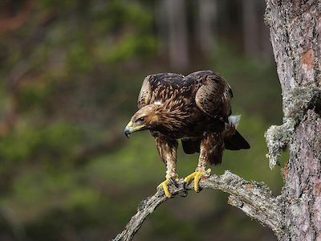
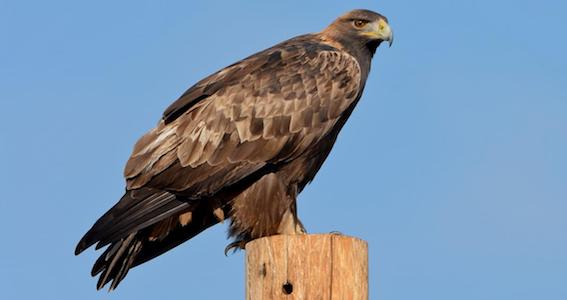

Wow! Based on your answers... You share similarities with the Golden Eagle (Aquila chrysaetos)

The Golden Eagle is an extremely athletic creature, reaching a top speed of 200 miles per hour when diving and standing around 26-40 inches, putting it in the average height range for birds. The Golden Eagle takes initiative in its hunting, providing food for itself and its offspring. Although they are often aggressive, especially around their offspring, they are surprisingly curious and playful which can be seen in their flight patterns when not hunting or migrating. Just like the Golden Eagle, you stand at an average height, are athletic and have a certain curiosity and playfulness to your personality.
Click on Ceasar to Restart!